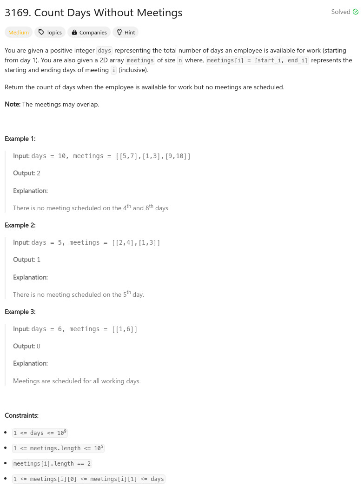

參考資訊：
https://github.com/doocs/leetcode/blob/main/solution/3100-3199/3169.Count%20Days%20Without%20Meetings/README_EN.md
題目：

int mysort(const void *a, const void *b)
{
return ((*(int **)a)[0] - (*(int **)b)[0]);
}
int max(int a, int b)
{
return a > b ? a : b;
}
int countDays(int days, int** meetings, int meetingsSize, int* meetingsColSize)
{
int r = 0;
int cc = 0;
int last = 0;
qsort(meetings, meetingsSize, sizeof(meetings[0]), mysort);
for (cc = 0; cc < meetingsSize; cc++) {
int st = meetings[cc][0];
int ed = meetings[cc][1];
if (last < st) {
r += (st - last - 1);
}
last = max(last, ed);
}
return r + (days - last);
}